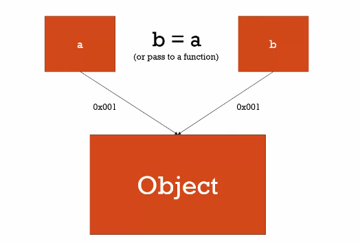

本次重點就是：By Value(傳值) 和 By Reference(傳參考)
在javascript裡面沒有選擇，所有純值都是By Value，而所有物件都是 By Reference
推薦免費課程：JavaScript 全攻略：克服 JS 的奇怪部分
雖然目前也只看到30%左右，但作者真的介紹了很多平常不會去注意的js觀念，也是重要的觀念，內容如其名:克服 JS 的奇怪部分。
（本次觀念在此課程的第36章節）
這次的觀念真的滿重要的，這邊僅個人筆記與內化使用，如需比較正確的觀念教學請見上述課程。
本篇文章內容大多源自這篇文章哦。
資料型別
- 簡單資料型別
- String
- Number
- Boolean
- Null
- Undefined
- Symbol (ECMAScript 6 新定義)
- 複雜資料型別
- Object 是唯一的複雜資料型別。而 Object 、 Array 、Function 都屬於Object的複雜資料型別。
By Value
1 | let a = true; |
By Value：當我們在建立簡單資料型別的變數時，會在記憶體中存在一個屬於其變數自己的位置。
也就是說a,和b宣告時，他們是佔用了不同的記憶體
在let b = a時，b去複製了a的值，但b仍在自己的記憶體位置中，
此時a和b是兩個不同的變數，只是它們的值都是true
最後當b = false執行時，b本身就是獨立的變數，因此a不會受到改變
網路圖解：
圖片來自JavaScript 全攻略：克服 JS 的奇怪部分
By Reference
1 | let a = {'name':'nick'}; |
當我們在建立複雜資料型別的變數時，會在記憶體中建立一個位置，然後將該變數資料位置指向該記憶體。
在此情況下，我們建立了所謂複雜資料型別變數，當我們建立一個b變數等於a時，會直接將b指向該記憶體，也就是{'name':'nick'}這個物件，此時a和b共同指向了同一個記憶體。
當b.name = 'tom'此時我們改變的記憶體中唯一的一筆資料
所以不論是a.name或b.name都是tom。
圖片來自JavaScript 全攻略：克服 JS 的奇怪部分
在javascript裡面沒有選擇，所有純值都是By Value，而所有物件都是 By Reference
複製複雜資料型別
在Javascript中，當變數放的內容是純值（非物件,a=1;），b=a的時候，是使用ByVal的方式，也就是複製一份資料給b，但這情況在「物件」(複雜資料型別)的狀況，卻是 By Reference的傳址方式，也就是兩個變數，指向同一個記憶區塊，資料是相同那塊空間的。因此，如果b[0].Name=”aaa”，這時候去取a[0].Name一樣會變成”aaa”。
資料來源
那麼，如何在物件的時候，如何真正的複製出一份內容，存在不同的記憶區塊，讓彼此不會影響呢？
1 | let players = ['Andy', 'Bosh', 'Chris', 'David']; |
我不能直接讓copyPlayers = players那該怎麼做?
以下有四種方法：
slice()
擷取陣列中的某一段成為新的陣列，原本的陣列將不會被修改。詳細介紹1
2let players = ['Andy', 'Bosh', 'Chris', 'David'];
let copyPlayers = players.slice();
concat()
被用來合併兩個或多個陣列。此方法不會改變現有的陣列，回傳一個包含呼叫者陣列本身的值，作為代替的是回傳一個新陣列。詳細介紹與用法：1
2
3
4var array1 = ['a', 'b', 'c'];
var array2 = ['d', 'e', 'f'];
console.log(array1.concat(array2));
// expected output: Array ["a", "b", "c", "d", "e", "f"]
本次範例：空陣列.concat(舊陣列)，即複製了舊陣列…1
2let players = ['Andy', 'Bosh', 'Chris', 'David'];
let copyPlayers = [].concat(players);
展開運算子(Spread Operator)
詳細介紹1、詳細介紹2
用法:1
2
3
4
5var params = [ "hello", true, 7 ]
var other = [ 1, 2, ...params ] // [ 1, 2, "hello", true, 7 ]
var str = "foo"
var chars = [ ...str ] // [ "f", "o", "o" ]
本次範例1
2let players = ['Andy', 'Bosh', 'Chris', 'David'];
let copyPlayers = [...players];
Array.from()
我們最常見的Array.from()1
2let players = ['Andy', 'Bosh', 'Chris', 'David'];
let copyPlayers = Array.from(players);;
Object.assign()
1 | let Kevin = { |
以上做法和我們預想的一樣,原始的name值會一起被改變
所以這邊我們可以利用 object.assign() 方法，來複製原始物件：詳細介紹
Object.assign(target, …sources)
Object.assign()被用來複製一個或多個物件自身所有可數的屬性到另一個目標物件。回傳的值為該目標物件。
1 | const person = { |
以上是可行的，但
警告:非深層複製
深層複製(deep clone)需要使用其他的替代方案，因為 Object.assign() 僅複製屬性值。若來源物件的值參照到一個子物件，它只會複製該子物件的參照。
白話來說就是當物件裡面還有一個子物件的話,這個子物件是無法被複製的。
舉例：1
2
3
4
5
6
7
8
9
10const person = {
name: {
firstName: 'Wes',
lastName: 'Bos'
},
age: 80
};
const copyperson = Object.assign({},person)
copyperson.name.firstName = 'Wu'
console.log(person,copyperson)
我們複製了person，且改變了複製出來的name.firstName = 'Wu'
輸出結果發先兩個的firstName都被改成Wu了！
正確做法是，透過 JSON 將物件序列化、再物件化。
NewObject = JSON.parse(JSON.stringify(OriginObj));
1 | const person = { |
簡單來說，我們定義一個變數copyperson為stringify(person)
此時stringify(person)傳化為字串，屬於簡單資料型別
所以就回到了一開始介紹的傳值(by Value)，copyperson會在記憶體中有獨立的位置儲存這筆資料
因此改變了copyperson的內容並不會影響到原本的person內容
當然最後再透過parse()轉回JSON格式
如此一來就變成我們要的結果了
補充：